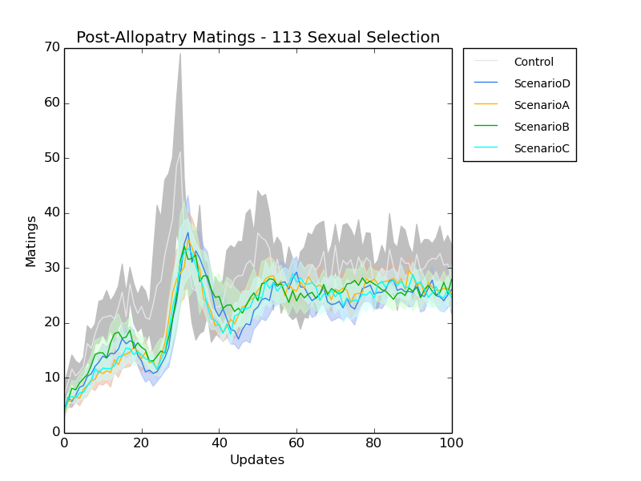

Hooray! It's Tuesday!
Earlier...
I generated the data to look at successful matings from my runs on the HPCC (Runs 112c). The following is a sad story.
[ED: Step 4 - yes, I realize it's confusing - (before allopatry) -- 10/8 1:52am]
caninoko@dev-intel14:~/mate_discrimination/output/112c_ExperimentalPipeline$ for k in *; do if [ -e $k"/"*_step4/mates ]; then echo $k; cd $k/*_step4/mates/; pwd; rm matings_timeseries.dat; for i in {0..999}; do echo $i; awk -v i="$i" '{if (($13 == i) && ($16 > 0) && (($11 > 1799 && $22 < 1800) || ($11 < 1800 && $22 > 1799))) print $2,$3,$4,$5,$8,$11,"--->",$13,$14,$15, $16,$19,$22}' <(gzip -dc mates-$i".dat.gz") | wc -l >> matings_timeseries.dat ; done; cd ../../../; fi ; done python ../../../research_scripts/quickplot.py --error --end_at 50 matings_50u matings_timeseries.dat 1 "Control_*/*_step4/mates/" Control matings_timeseries.dat 1 "ScenarioD_*/*_step4/mates/" ScenarioD matings_timeseries.dat 1 "ScenarioA_*/*_step4/mates/" ScenarioA matings_timeseries.dat 1 "ScenarioB_*/*_step4/mates/" ScenarioB matings_timeseries.dat 1 "ScenarioC_*/*_step4/mates/" ScenarioC
So there is no discernible difference between the scenarios and the control. [ED: this is wrong. This figure only reflects the before allopatry state. of course there is no difference. see below -- 10/8 1:52am]
I did a run in Scenario A, dumping out the population files every 10 updates for the mating trials (the outputs of step 3). What this illustrates is post-zygotic isolation.
rosiec@Weir:~/Dropbox/School_Docs/Research/AvidaDev/avida_dev_sexual_selection_testing/experimental_setup/ScenarioA/data__A_step3_debugmatings$ for i in {25..1}; do tail -n +26 detail-$i"0".spop >> detail-total.spop; done sort -u -k1,1 detail-total.spop > detail-uniq.spop rm gen1_total.dat; for i in {1..25}; do awk -v i="$i" '{if ($11 == 1) print "parents:",$4,"merit,gest,fit:",$8,$9,$10,"-- generation,update:",$11,$12}' detail-$i"0".spop | wc -l >> gen1_total.dat; done rm gen1_meritnonzero.dat; for i in {1..25}; do awk -v i="$i" '{if ($11 == 1 && $8 == 0) print "parents:",$4,"merit,gest,fit:",$8,$9,$10,"-- generation,update:",$11,$12}' detail-$i"0".spop | wc -l >> gen1_meritnonzero.dat; done rm gen1_meritnonzero_overthewall.dat; for i in {1..25}; do awk -v i="$i" '{split($4, array, /,/); if ($11 == 1 && $8 > 0 && ((array[1] > 1799 && array[2] < 1800) || (array[1] < 1800 && array[2] > 1799)) ) print "parents:",$4,"merit,gest,fit:",$8,$9,$10,"-- generation,update:",$11,$12}' detail-$i"0".spop | wc -l >> gen1_meritnonzero_overthewall.dat ; done rm gen1_overthewall.dat; for i in {1..25}; do awk -v i="$i" '{split($4, array, /,/); if ($11 == 1 && ((array[1] > 1799 && array[2] < 1800) || (array[1] < 1800 && array[2] > 1799)) ) print "parents:",$4,"merit,gest,fit:",$8,$9,$10,"-- generation,update:",$11,$12}' detail-$i"0".spop | wc -l >> gen1_overthewall.dat ; done rm gen1_live_nonhybrid.dat; for i in {1..25}; do awk -v i="$i" '{split($4, array, /,/); if ($11 == 1 && $8 > 0 && ((array[1] < 1800 && array[2] < 1800) || (array[1] > 1799 && array[2] > 1799)) ) print "parents:",$4,"merit,gest,fit:",$8,$9,$10,"-- generation,update:",$11,$12}' detail-$i"0".spop | wc -l >> gen1_live_nonhybrid.dat ; done rm gen1_nonhybrid.dat; for i in {1..25}; do awk -v i="$i" '{split($4, array, /,/); if ($11 == 1 && ((array[1] < 1800 && array[2] < 1800) || (array[1] > 1799 && array[2] > 1799)) ) print "parents:",$4,"merit,gest,fit:",$8,$9,$10,"-- generation,update:",$11,$12}' detail-$i"0".spop | wc -l >> gen1_nonhybrid.dat ; done echo "#update gen1_total, gen1_merit>0, gen1_merit>0_OTW, gen1_OTW, gen1_Live_NonHybrid, gen1_nonHybrid" > offspring.dat; paste updates.dat gen1_total.dat gen1_meritnonzero.dat gen1_meritnonzero_overthewall.dat gen1_overthewall.dat gen1_live_nonhybrid.dat gen1_nonhybrid.dat >> offspring.dat awk '{$1=$1}1' OFS=" " offspring.dat > offspring.cleaned.dat python ../../../../../research_scripts/quickplot.py -t "Generation 1 Offspring" offspring offspring.cleaned.dat 2 ./ Total offspring.cleaned.dat 5 ./ Hybrid offspring.cleaned.dat 7 ./ NonHybrid offspring.cleaned.dat 3 ./ Total_Live offspring.cleaned.dat 4 ./ Live_Hybrids offspring.cleaned.dat 6 ./ Live_NonHybrid
So, I've expanded the mating preference display C bits to 8 to give more space for the organisms to expand their phenotypes into different areas.
Separately, per conversation with Charles yesterday, I'm doing some runs that don't use mating preferences. Rather they use mate preference random, but everything else is the same. This will show whether there is any difference in achieving allopatric speciation with sexual selection vs not.
Spent a fair bit of time re-running the end parts of the 112c runs to gather the data for the offspring analysis. I copied in the config files from the 112 config directory, and modified event_III.cfg to include the every 10 updates dump of the population, and limiting the run to 250 updates.
caninoko@dev-intel14:~/mate_discrimination/output/112c_ExperimentalPipeline$ for seed in {112001..112030}; do if [ -e ScenarioD_Drift_$seed ]; then cd ScenarioD_Drift_$seed ; zcat data__ScenarioD_Drift_step2a/detail-300000.spop* > detail-combined.spop; zcat data__ScenarioD_Drift_step2b/detail-300000.spop* | tail -n +24 >> detail-combined.spop; ../avida -s $seed -set EVENT_FILE ../events_III.cfg -set ENVIRONMENT_FILE ../environment_I_*.cfg -set DATA_DIR data__ScenarioD_Drift_step3_detail; rm detail-combined.spop; cd ../; fi; done caninoko@dev-intel14:~/mate_discrimination/output/112c_ExperimentalPipeline$ for seed in {112001..112030}; do if [ -e ScenarioB*_$seed ]; then cd ScenarioB*_$seed ; zcat data__B_step2a/detail-300000.spop* > detail-combined.spop; zcat data__B_step2b/detail-300000.spop* | tail -n +24 >> detail-combined.spop; ../avida -s $seed -set EVENT_FILE ../events_III.cfg -set ENVIRONMENT_FILE ../environment_IV_*.cfg -set DATA_DIR data__ScenarioB_step3_detail; rm detail-combined.spop; cd ../; fi; done caninoko@dev-intel14:~/mate_discrimination/output/112c_ExperimentalPipeline$ for seed in {112001..112030}; do if [ -e ScenarioA*_$seed ]; then cd ScenarioA*_$seed ; zcat data__A_step2a/detail-300000.spop* > detail-combined.spop; zcat data__A_step2b/detail-300000.spop* | tail -n +24 >> detail-combined.spop; ../avida -s $seed -set EVENT_FILE ../events_III.cfg -set ENVIRONMENT_FILE ../environment_I_*.cfg -set DATA_DIR data__ScenarioA_step3_detail; rm detail-combined.spop; cd ../; fi; done caninoko@dev-intel14:~/mate_discrimination/output/112c_ExperimentalPipeline$ for seed in {112001..112030}; do if [ -e ScenarioC*_$seed ]; then cd ScenarioC*_$seed ; zcat data__C_step2a/detail-300000.spop* > detail-combined.spop; zcat data__C_step2b/detail-300000.spop* | tail -n +24 >> detail-combined.spop; ../avida -s $seed -set EVENT_FILE ../events_III.cfg -set ENVIRONMENT_FILE ../environment_I_*.cfg -set DATA_DIR data__ScenarioC_step3_detail; rm detail-combined.spop; cd ../; fi; done caninoko@dev-intel14:~/mate_discrimination/output/112c_ExperimentalPipeline$ for seed in {112001..112030}; do if [ -e Control*_$seed ]; then cd Control*_$seed ; zcat data__Control3_step2/detail-300000.spop* > detail-combined.spop; ../avida -s $seed -set EVENT_FILE ../events_III.cfg -set ENVIRONMENT_FILE ../environment_I_*.cfg -set DATA_DIR data__Control3_step3_detail; rm detail-combined.spop; cd ../; fi; done
Discovered that my control runs didn't run the full length, thus weren't a good comparison of the step 3. Um, it's possible that the controlw wasn't actually buried in the middle there at all! Rather, it wasn't there at all! So, we'll see what comes up when the control actually runs. [ED: Nope, they're in there, but it's the same because, duh, this is pre-allopatry. see below. -- 10/8 1:58am]
The following runs are queued.
Once 112d finishes, then I'll be able to re-run the last command above, and then generate a new graph, with error bars, showing the hybrid organisms stuff (last graph above). Separately, do I want to just total the number of hybrids? Do I care about it as a timeseries? Timeseries are only interesting if I care about fecundity vs survivability. An interesting question, but not what I'm pursuing right now.
Um, also, oops. Before, I was only looking at step 4, and acting as if it was step 3. STUPID. I made some notes above to reflect this. Now, I'll run the same analysis on step 3. THere's no control, because of the broken thing mentioned above. Will re-run when I have all the data.
Step 3 (after 300k of allopatry):
caninoko@dev-intel14:~/mate_discrimination/output/112c_ExperimentalPipeline$ for k in *; do if [ -e $k"/"*_step3/mates ]; then echo $k; cd $k/*_step3/mates/; pwd; rm matings_timeseries.dat; for i in {0..999}; do echo $i; awk -v i="$i" '{if (($13 == i) && ($16 > 0) && (($11 > 1799 && $22 < 1800) || ($11 < 1800 && $22 > 1799))) print $2,$3,$4,$5,$8,$11,"--->",$13,$14,$15, $16,$19,$22}' <(gzip -dc mates-$i".dat.gz") | wc -l >> matings_timeseries.dat ; done; cd ../../../; fi ; done python ../../../research_scripts/quickplot.py --error --end_at 100 matings_100u_postallopatry matings_timeseries.dat 1 "Control_*/*_step3/mates/" Control matings_timeseries.dat 1 "ScenarioD_*/*_step3/mates/" ScenarioD matings_timeseries.dat 1 "ScenarioA_*/*_step3/mates/" ScenarioA matings_timeseries.dat 1 "ScenarioB_*/*_step3/mates/" ScenarioB matings_timeseries.dat 1 "ScenarioC_*/*_step3/mates/" ScenarioC
I ommited the Control above, since we don't have data for it yet, but it does look pretty different. Previous graph (matings_50u pre-allopatry) included for comparison.
This run is only half done, but 15 of the replicates are in, so I can use it.
caninoko@dev-intel14:~/mate_discrimination/output/114b_ExperimentalPipeline_NoSexualSelection$ for k in *; do if [ -e $k"/"*_step3/mates ]; then echo $k; cd $k/*_step3/mates/; pwd; rm matings_timeseries.dat; for i in {0..250}; do echo $i; awk -v i="$i" '{if ((($11 > 1799 && $22 < 1800) || ($11 < 1800 && $22 > 1799))) print $2,$3,$4,$5,$8,$11,"--->",$13,$14,$15, $16,$19,$22}' <(gzip -dc mates-$i".dat.gz") | wc -l >> matings_timeseries.dat ; done; cd ../../../; fi ; done caninoko@dev-intel14:~/mate_discrimination/output/114_ExperimentalPipeline_NoSexualSelection$ for k in *; do if [ -e $k"/"*_step3/mates ]; then echo $k; cd $k/*_step3/mates/; pwd; rm matings_timeseries.dat; for i in {0..250}; do echo $i; awk -v i="$i" '{if ((($11 > 1799 && $22 < 1800) || ($11 < 1800 && $22 > 1799))) print $2,$3,$4,$5,$8,$11,"--->",$13,$14,$15, $16,$19,$22}' <(gzip -dc mates-$i".dat.gz") | wc -l >> matings_timeseries.dat ; done; cd ../../../; fi ; done python ../../../research_scripts/quickplot.py --error --end_at 100 -x Updates -y Matings -t "Post-Allopatry Matings - 114 No Sexual Selection" 114_matings_100u_postallopatry matings_timeseries.dat 1 "../114b_ExperimentalPipeline_NoSexualSelection/Control_*/*_step3/mates/" Control matings_timeseries.dat 1 "ScenarioD_*/*_step3/mates/" ScenarioD matings_timeseries.dat 1 "ScenarioA_*/*_step3/mates/" ScenarioA matings_timeseries.dat 1 "ScenarioB_*/*_step3/mates/" ScenarioB matings_timeseries.dat 1 "ScenarioC_*/*_step3/mates/" ScenarioC
caninoko@dev-intel14:~/mate_discrimination/output/113b_ExperimentalPipeline_8Bits$ for k in *; do if [ -e $k"/"*_step3/mates ]; then echo $k; cd $k/*_step3/mates/; pwd; rm matings_timeseries.dat; for i in {0..250}; do echo $i; awk -v i="$i" '{if ((($11 > 1799 && $22 < 1800) || ($11 < 1800 && $22 > 1799))) print $2,$3,$4,$5,$8,$11,"--->",$13,$14,$15, $16,$19,$22}' <(gzip -dc mates-$i".dat.gz") | wc -l >> matings_timeseries.dat ; done; cd ../../../; fi ; done caninoko@dev-intel14:~/mate_discrimination/output/113_ExperimentalPipeline_8Bits$ for k in *; do if [ -e $k"/"*_step3/mates ]; then echo $k; cd $k/*_step3/mates/; pwd; rm matings_timeseries.dat; for i in {0..250}; do echo $i; awk -v i="$i" '{if ((($11 > 1799 && $22 < 1800) || ($11 < 1800 && $22 > 1799))) print $2,$3,$4,$5,$8,$11,"--->",$13,$14,$15, $16,$19,$22}' <(gzip -dc mates-$i".dat.gz") | wc -l >> matings_timeseries.dat ; done; cd ../../../; fi ; done python ../../../research_scripts/quickplot.py --error --end_at 100 -x Updates -y Matings -t "Post-Allopatry Matings - 113 Sexual Selection" 113_matings_100u_postallopatry matings_timeseries.dat 1 "../113b*/Control_*/*_step3/mates/" Control matings_timeseries.dat 1 "ScenarioD_*/*_step3/mates/" ScenarioD matings_timeseries.dat 1 "ScenarioA_*/*_step3/mates/" ScenarioA matings_timeseries.dat 1 "ScenarioB_*/*_step3/mates/" ScenarioB matings_timeseries.dat 1 "ScenarioC_*/*_step3/mates/" ScenarioC
Finally some good news! :D Sexual selection is doing it! :D

for k in *; do if [ -e $k"/"*_step3/ ]; then echo $k; cd $k/*_step3/; \
for i in {25..1}; do zcat detail-$i"0".spop* | tail -n +26 >> detail-total.spop; done; \
sort -u -k1,1 detail-total.spop > detail-uniq.spop; \
rm gen1_total.dat; for i in {1..25}; do awk -v i="$i" '{if ($11 == 1) print "parents:",$4,"merit,gest,fit:",$8,$9,$10,"-- generation,update:",$11,$12}' <(gzip -dc detail-$i"0".spop*) | wc -l >> gen1_total.dat; done; \
rm gen1_meritnonzero.dat; for i in {1..25}; do awk -v i="$i" '{if ($11 == 1 && $8 == 0) print "parents:",$4,"merit,gest,fit:",$8,$9,$10,"-- generation,update:",$11,$12}' <(gzip -dc detail-$i"0".spop*) | wc -l >> gen1_meritnonzero.dat; done; \
rm gen1_meritnonzero_overthewall.dat; for i in {1..25}; do awk -v i="$i" '{split($4, array, /,/); if ($11 == 1 && $8 > 0 && ((array[1] > 1799 && array[2] < 1800) || (array[1] < 1800 && array[2] > 1799))) print "parents:",$4,"merit,gest,fit:",$8,$9,$10,"-- generation,update:",$11,$12}' <(gzip -dc detail-$i"0".spop*) | wc -l >> gen1_meritnonzero_overthewall.dat ; done; \
rm gen1_overthewall.dat; for i in {1..25}; do awk -v i="$i" '{split($4, array, /,/); if ($11 == 1 && ((array[1] > 1799 && array[2] < 1800) || (array[1] < 1800 && array[2] > 1799)) ) print "parents:",$4,"merit,gest,fit:",$8,$9,$10,"-- generation,update:",$11,$12}' <(gzip -dc detail-$i"0".spop*) | wc -l >> gen1_overthewall.dat ; done; \
rm gen1_live_nonhybrid.dat; for i in {1..25}; do awk -v i="$i" '{split($4, array, /,/); if ($11 == 1 && $8 > 0 && ((array[1] < 1800 && array[2] < 1800) || (array[1] > 1799 && array[2] > 1799)) ) print "parents:",$4,"merit,gest,fit:",$8,$9,$10,"-- generation,update:",$11,$12}' <(gzip -dc detail-$i"0".spop*) | wc -l >> gen1_live_nonhybrid.dat ; done; \
rm gen1_nonhybrid.dat; for i in {1..25}; do awk -v i="$i" '{split($4, array, /,/); if ($11 == 1 && ((array[1] < 1800 && array[2] < 1800) || (array[1] > 1799 && array[2] > 1799)) ) print "parents:",$4,"merit,gest,fit:",$8,$9,$10,"-- generation,update:",$11,$12}' <(gzip -dc detail-$i"0".spop*) | wc -l >> gen1_nonhybrid.dat ; done; \
rm updates.dat; for i in {1..25} ; do echo $i"0" >> updates.dat; done; \
echo "#update gen1_total, gen1_merit>0, gen1_merit>0_OTW, gen1_OTW, gen1_Live_NonHybrid, gen1_nonHybrid" > offspring.dat; paste updates.dat gen1_total.dat gen1_meritnonzero.dat gen1_meritnonzero_overthewall.dat gen1_overthewall.dat gen1_live_nonhybrid.dat gen1_nonhybrid.dat >> offspring.dat; \
awk '{$1=$1}1' OFS=" " offspring.dat > offspring.cleaned.dat; \
cd ../../; fi ; done;
python ../../../research_scripts/quickplot.py --error -t "Generation 1 Offspring - 113 ScenarioD Drift" 113_offspring_scenarioD offspring.cleaned.dat 2 "./ScenarioD*/*step3/" Total offspring.cleaned.dat 5 "./ScenarioD*/*step3/" Hybrid offspring.cleaned.dat 7 "./ScenarioD*/*step3/" NonHybrid offspring.cleaned.dat 3 "./ScenarioD*/*step3/" Total_Live offspring.cleaned.dat 4 "./ScenarioD*/*step3/" Live_Hybrids offspring.cleaned.dat 6 "./ScenarioD*/*step3/" Live_NonHybrid;
python ../../../research_scripts/quickplot.py --error -t "Generation 1 Offspring - 113 ScenarioC" 113_offspring_scenarioC offspring.cleaned.dat 2 "./ScenarioC*/*step3/" Total offspring.cleaned.dat 5 "./ScenarioC*/*step3/" Hybrid offspring.cleaned.dat 7 "./ScenarioC*/*step3/" NonHybrid offspring.cleaned.dat 3 "./ScenarioC*/*step3/" Total_Live offspring.cleaned.dat 4 "./ScenarioC*/*step3/" Live_Hybrids offspring.cleaned.dat 6 "./ScenarioC*/*step3/" Live_NonHybrid;
python ../../../research_scripts/quickplot.py --error -t "Generation 1 Offspring - 113 ScenarioB" 113_offspring_scenarioB offspring.cleaned.dat 2 "./ScenarioB*/*step3/" Total offspring.cleaned.dat 5 "./ScenarioB*/*step3/" Hybrid offspring.cleaned.dat 7 "./ScenarioB*/*step3/" NonHybrid offspring.cleaned.dat 3 "./ScenarioB*/*step3/" Total_Live offspring.cleaned.dat 4 "./ScenarioB*/*step3/" Live_Hybrids offspring.cleaned.dat 6 "./ScenarioB*/*step3/" Live_NonHybrid;
python ../../../research_scripts/quickplot.py --error -t "Generation 1 Offspring - 113 ScenarioA" 113_offspring_scenarioA offspring.cleaned.dat 2 "./ScenarioA*/*step3/" Total offspring.cleaned.dat 5 "./ScenarioA*/*step3/" Hybrid offspring.cleaned.dat 7 "./ScenarioA*/*step3/" NonHybrid offspring.cleaned.dat 3 "./ScenarioA*/*step3/" Total_Live offspring.cleaned.dat 4 "./ScenarioA*/*step3/" Live_Hybrids offspring.cleaned.dat 6 "./ScenarioA*/*step3/" Live_NonHybrid;
python ../../../research_scripts/quickplot.py --error -t "Generation 1 Offspring - 113 Control" 113_offspring_control offspring.cleaned.dat 2 "./Control*/*step3/" Total offspring.cleaned.dat 5 "./Control*/*step3/" Hybrid offspring.cleaned.dat 7 "./Control*/*step3/" NonHybrid offspring.cleaned.dat 3 "./Control*/*step3/" Total_Live offspring.cleaned.dat 4 "./Control*/*step3/" Live_Hybrids offspring.cleaned.dat 6 "./Control*/*step3/" Live_NonHybrid;